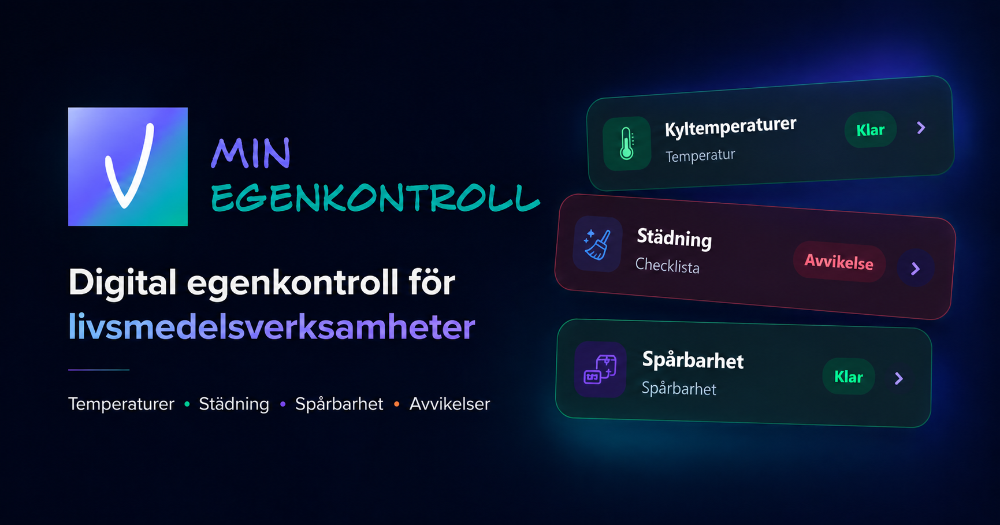

HACCP och riskstyrning
Se hur delarna hänger ihop innan du börjar dokumentera.
Läs guidenTillfällig visuell prototyp · DO NOT MERGE
För små livsmedelsverksamheter
Hitta vägledning, använd mallar och håll det återkommande arbetet samlat i en enkel app.
För restaurang, café, bageri, foodtruck och butik.

En samlad plats för vardagens kontrollerKontroller, avvikelser och historik i samma vardagsflöde.
Hjälp nära vardagen
Frågor, resurser och nästa steg samlade på ett ställe.
Plats för verifierad sökfråga
Hur kommer jag igång med en kontrollplan?Hur gör jag en enkel faroanalys?Vilken checklista passar min verksamhet?Kunskap som går att använda
Se hur delarna hänger ihop innan du börjar dokumentera.
Läs guidenEn tydlig utgångspunkt att anpassa till din verksamhet.
Öppna mallenSkapa ett första utkast med synliga antaganden.
Utforska verktygetFör verksamheter
Välj en startpunkt för din typ av verksamhet och se relevanta rutiner, resurser och arbetsflöden.
När arbetet återkommer
Dagens kontroller är samlade i en tydlig arbetsvy.
Gör kontrollen när arbetet händer.
Hitta avvikelser och historik när du behöver dem.
Förtroende i varje steg
Här ska det vara lätt att se vad som är vägledning, vad som behöver anpassas och hur dokumentationen följs upp.
Så arbetar vi med källorNästa steg